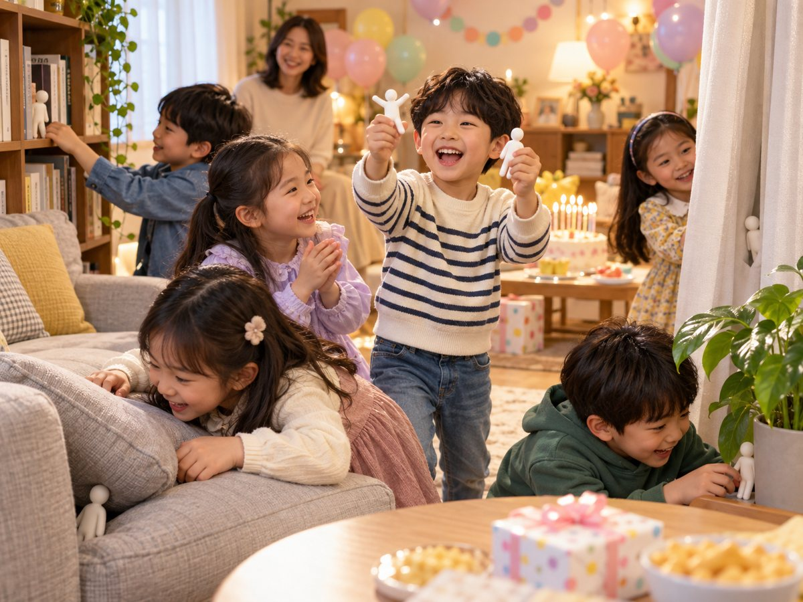
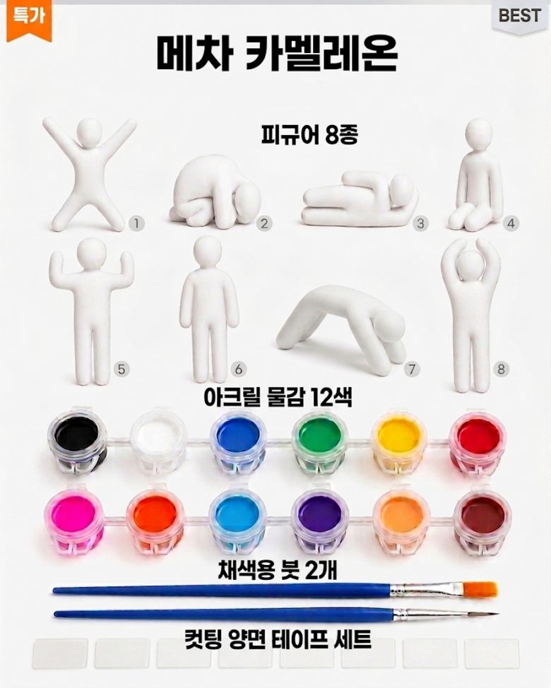
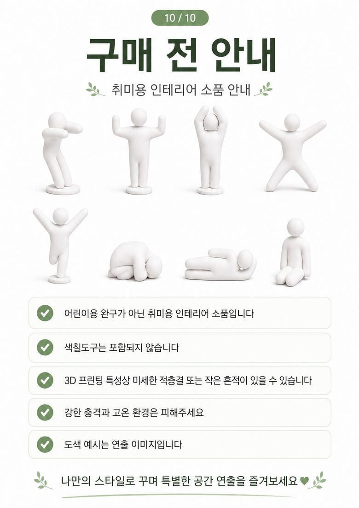
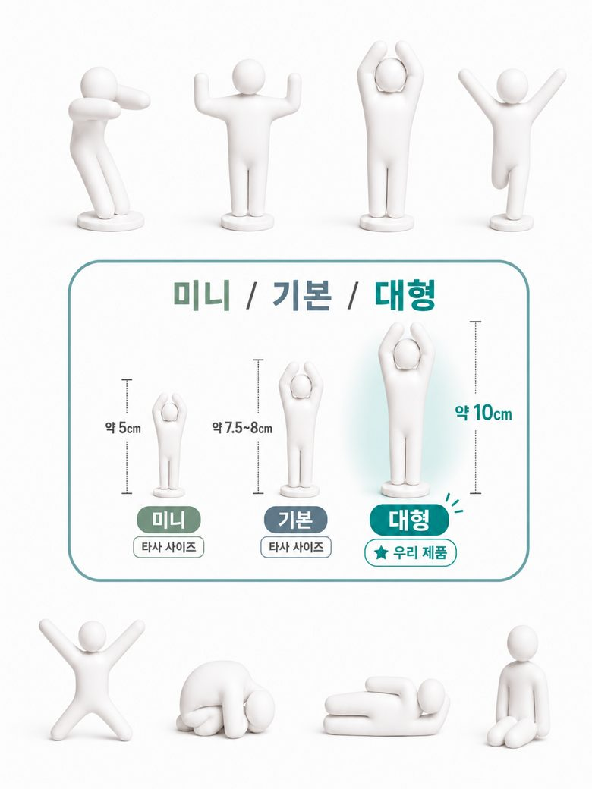
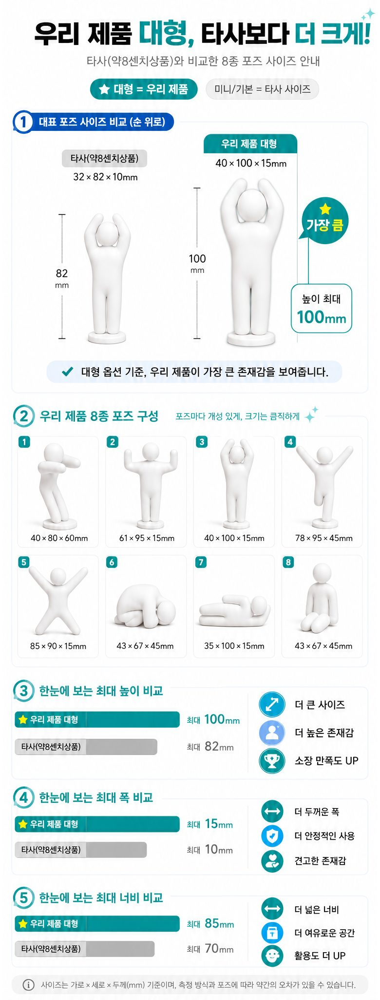

메챠 카멜레온 피규어 8종으로 현실 숨바꼭질 하기
흰 피규어에 숨길 곳과 같은 색을 칠해 책장·화분·정원에 숨기고, 가족이나 친구가 찾는 놀이입니다. 게임 메챠 카멜레온(MECCHA CHAMELEON)의 규칙을 그대로 현실로 옮겼습니다.
판매자 예전이 직접 작성 · 가격 확인일 2026년 10월 22일 (쿠팡 판매가는 바뀔 수 있습니다)
대형 8종 (약 10cm) 쿠팡에서 보기 중형 8종 + 물감 세트 쿠팡에서 보기 9종 세트 (자석 추가) 쿠팡에서 보기
단체 수업·행사용으로 많이 써요
이 피규어는 가정용보다 단체 교육용 조형 교보재로 더 많이 나갑니다. 아이 한 명이 하나씩 맡아 칠하고, 숨기고, 서로 찾는 연계 게임까지 한 번에 할 수 있어 유치원·학교·방과후 미술 수업, 실내외 행사, 어린이 행사 체험 부스에서 씁니다. 세트 단위라 인원에 맞추기 쉽고, 물감·붓을 뺀 9종 세트(자석 추가)로 준비하면 1인당 약 862원입니다. 9종 세트의 자석 피스는 게임 상품으로 주기 좋습니다.

수업 장면 사진은 AI로 만든 연출 이미지입니다.
인원별 세트 수·예산표, 수업 진행안, 행사 운영 팁, 연계 게임 보기 →
집콕 놀이 · 아이 생일파티 게임 · 실내 레크리에이션
규모가 작아도 규칙은 같습니다. 집에서 아이랑 하는 놀이부터 아이 생일파티 게임, 교회학교·지역아동센터·캠프 같은 실내 레크리에이션, 수백 명이 모이는 대규모 행사까지 같은 피규어로 놀 수 있습니다.

생일파티 장면 사진은 AI로 만든 연출 이미지입니다.
색칠하지 않아도 됩니다
흰 피규어를 그대로 숨기고 찾는 숨바꼭질만으로도 충분히 놉니다. 흰 벽이나 흰 이불 위에서는 잘 안 보이고 색 있는 물건 옆에서는 금방 들키니, 어디에 숨길지 고르는 것부터가 게임입니다. 물감이 들어 있지 않은 9종 세트도 이렇게 바로 쓸 수 있습니다.
집에서 아이랑 놀이
숨길 개수와 제한 시간을 정하고 한 사람이 숨기면 나머지가 찾습니다. 저녁 10분이면 한 판이 끝나고, 역할을 바꿔 가며 몇 번이고 할 수 있는 실내 놀이입니다.
아이 생일파티 게임 · 키즈 파티 게임
손님 수만큼 피규어를 준비해 생일 주인공이 거실 곳곳에 숨기고 친구들이 찾습니다. 시간이 있으면 각자 하나씩 칠해 보고, 찾은 피규어는 집에 가져가게 해도 좋습니다. 9종 세트의 자석 피스는 우승 상품으로 쓰기 좋습니다.
실내 레크리에이션
비 오는 날 체육 시간, 교회학교, 캠프 저녁 프로그램처럼 실내에서 여럿이 움직이는 놀이가 필요할 때 팀을 나눠 숨기고 찾는 대결로 진행합니다. 준비물이 피규어뿐이라 설명과 정리가 짧습니다.
물감 걱정은 덜어도 됩니다
칠하기까지 한다면 아크릴 물감을 씁니다. 아크릴 물감은 수성이라 마르기 전에는 손·책상·옷에 묻어도 물로 쉽게 씻겨 부담이 적습니다. 피규어에 칠한 뒤 완전히 마르면 물에 잘 지워지지 않아 위장 색이 유지됩니다. 옷에 묻었다면 마르기 전에 바로 물로 헹궈 주세요.
한눈에 보는 요약
| 상품 | 메챠 카멜레온 숨바꼭질 피규어 8종 (흰색, 색칠용) |
|---|---|
| 구성 | 대형: 피규어 8종 (물감 미포함) 중형: 피규어 8종 + 아크릴 물감 12색 + 채색용 붓 2개 + 컷팅 양면 테이프 9종 세트: 피스 9개 (자석 피스 1개 포함) + 접착 테이프 (물감·붓 미포함) |
| 크기 | 대형: 최대 높이 약 100mm (10cm) 중형: 약 80mm (8cm) |
| 소재·제작 | PLA, 국내 3D 프린팅 제작 |
| 가격 | 대형 8,910원 · 중형 세트 8,900원 · 9종 세트 6,900원 (정가 10,000원) (2026-10-22 쿠팡 판매가, 무료배송) |
| 구매처 | 쿠팡 판매자 예전 · 상품번호 9629940163 (대형), 9664231936 (중형 세트), 9714005620 (9종 세트) |
메챠 카멜레온은 어떤 게임인가요?
메챠 카멜레온은 2026년 6월 PC(Steam)로 나온 숨바꼭질 파티 게임입니다. 2026년 9월에는 닌텐도 스위치 2판도 나왔습니다. 숨는 쪽은 하얀 몸을 가진 캐릭터를 조종하며, 주변 배경과 똑같이 몸에 페인트를 칠하고 포즈를 맞춰 숨습니다. 찾는 쪽은 제한 시간 안에 모두 찾아내야 이깁니다.
이 피규어는 그 놀이를 손으로 해 볼 수 있게 만든 흰색 사람 모양 피규어입니다. 게임처럼 흰 몸 → 배경색 칠하기 → 포즈 골라 숨기기 → 찾기 순서로 놉니다.

노는 방법
- 숨길 곳 고르기 · 책장, 화분, 돌담, 나무껍질, 소파처럼 무늬가 있는 곳이 좋습니다.
- 포즈 고르기 · 세로로 긴 곳엔 차렷·만세, 바닥엔 엎드리기·웅크리기 포즈가 잘 숨습니다.
- 배경색 칠하기 · 아크릴 물감을 섞어 배경과 같은 색을 만들고 무늬까지 따라 그립니다.
- 숨기기 · 중형 세트의 양면 테이프를 뒷면에 붙이면 벽이나 나무에도 고정됩니다.
- 찾기 · 제한 시간을 정해 가족·친구가 찾게 합니다. 찾은 뒤에는 다른 장소용으로 다시 칠해 반복할 수 있습니다.

대형·중형·9종 세트, 무엇을 고를까요?
대형 8종 · 약 10cm · 물감 미포함
크기가 커서 무늬를 따라 칠하기 쉽고, 배경에 섞였을 때 위장 효과가 잘 보입니다. 받침이 넓어 세워 두기 좋습니다. 물감과 붓이 이미 있다면 이쪽을 고르세요.
대형 8종 쿠팡에서 보기중형 8종 + 물감 12색 + 붓 2개 + 양면 테이프 · 약 8cm
받자마자 바로 칠하고 숨길 수 있는 올인원 세트입니다. 처음 해 보는 집, 아이 선물로 고르기 쉽습니다.
중형 물감 세트 쿠팡에서 보기9종 세트 (자석 추가) + 접착 테이프 · 물감·붓 없음 · 6,900원
칠하기 도구를 빼서 가격을 낮춘 구성입니다. 피스 9개 가운데 1개는 자석 피스입니다. 대규모 행사나 단체 수업에서 아이마다 피규어를 하나씩 나눠 주고 자석 피스는 상품으로 쓰기 좋습니다. 물감이 있는 기관이나, 색칠 없이 숨바꼭질만 할 때 가장 저렴합니다. 정가 10,000원, 무료배송.
9종 세트 쿠팡에서 보기
8가지 포즈와 크기 (대형 기준)
만세, 차렷, 머리 위로 손 모으기, 한쪽 팔 들기, X자, 웅크리기, 엎드려 눕기, 쪼그려 앉기의 8가지입니다. 대형의 포즈별 크기는 가로×세로×두께 기준으로 40×80×60mm부터 61×95×15mm, 40×100×15mm까지입니다. 출력 오차가 조금 있을 수 있습니다.

자주 묻는 질문
메챠 카멜레온 피규어는 어디서 살 수 있나요?
국내 쿠팡에서 판매자 '예전'의 상품으로 살 수 있습니다. 대형 8종은 상품번호 9629940163, 중형 물감 세트는 상품번호 9664231936, 9종 세트(자석 추가)는 상품번호 9714005620이며 모두 무료배송입니다.
메챠 카멜레온 놀이를 현실에서 하려면 무엇이 필요한가요?
흰 피규어, 아크릴 물감, 붓, 숨길 장소만 있으면 됩니다. 중형 세트에는 물감·붓·양면 테이프가 모두 들어 있습니다.
어떤 물감으로 칠해야 하나요?
PLA에는 아크릴 물감이 잘 칠해집니다. 아크릴 물감은 수성이라 마르기 전에는 물로 쉽게 씻기고, 완전히 마르면 물에 잘 지워지지 않아 위장 색이 유지됩니다. 야외에 오래 둘 거라면 마른 뒤 투명 바니시를 덧바르세요.
아이와 같이 해도 되나요?
PLA 소재로 국내에서 3D 프린팅해 만듭니다. 색칠·숨기기·찾기는 가족 놀이로 좋습니다. 물감을 쓸 때는 보호자가 함께해 주세요. 3D 프린팅 특성상 표면에 얇은 적층 결이 있을 수 있습니다.
색칠한 뒤 다시 흰색으로 돌릴 수 있나요?
피규어에 칠한 아크릴 물감은 완전히 마르면 잘 지워지지 않습니다. 다른 장소용으로 쓰려면 그 위에 새 배경색을 덧칠하면 됩니다.
유치원·학교 단체 미술 수업이나 행사에도 쓸 수 있나요?
네. 단체 교육용 조형 교보재로 가장 많이 쓰입니다. 아이마다 하나씩 칠하고 숨긴 뒤 서로 찾는 연계 게임으로 이어집니다. 수업 진행안과 행사 운영 팁은 단체 수업·행사 활용 안내에 있습니다.
단체 수업용으로는 몇 세트가 필요한가요?
아이들에게 나눌 피규어를 세트당 8개로 보고 인원 ÷ 8을 올림하면 됩니다. 30명이면 4세트, 100명이면 13세트입니다. 가장 저렴한 구성은 9종 세트(1인당 약 862원)이고, 물감이 없다면 중형 물감 세트 1개에 나머지를 9종 세트로 채우세요. 쿠팡 상품 페이지에서 수량을 골라 주문할 수 있습니다.
색칠하지 않고도 놀 수 있나요?
네. 흰 피규어를 그대로 숨기고 찾는 숨바꼭질만으로도 놀 수 있습니다. 집에서 아이랑 놀이, 생일파티 게임, 실내 레크리에이션으로 바로 쓰기 좋습니다.
물감이 손이나 옷에 묻으면 어떻게 하나요?
아크릴 물감은 수성이라 마르기 전에는 물로 쉽게 씻깁니다. 옷에 묻으면 마르기 전에 바로 물로 헹궈 주세요. 피규어에 칠한 물감은 완전히 마르면 잘 지워지지 않아 위장 색이 유지됩니다.
게임 정보 출처: Gematsu, Nintendo. 상세페이지의 도색 예시 사진 일부는 연출 이미지이고, 수업·생일파티 장면 사진은 AI로 만든 연출 이미지입니다.